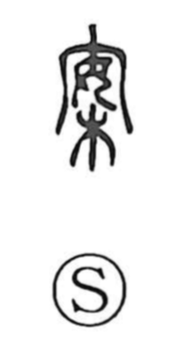

案

Kun: tsukue | On: an
plan ・ proposal ・ case ・ table ・ to think
Explanation
案 combines 木, wood, with 安 as its sound element. It names a stand or table on which things are placed. Early usage distinguishes a tray raised on legs, 案, from a flat tray without legs, 槃.
When books or documents were placed on the stand, it became a place for examination and thought. 案 therefore came to mean considering, devising, and investigating. What is considered can itself be an 案: a proposal, a case, or the papers belonging to it. The physical support for the documents supplies the setting for the mental work carried out over them.